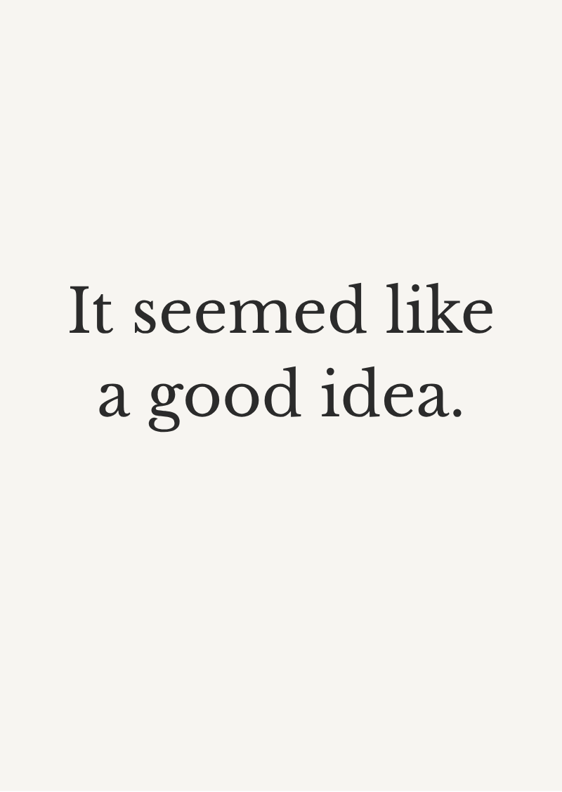
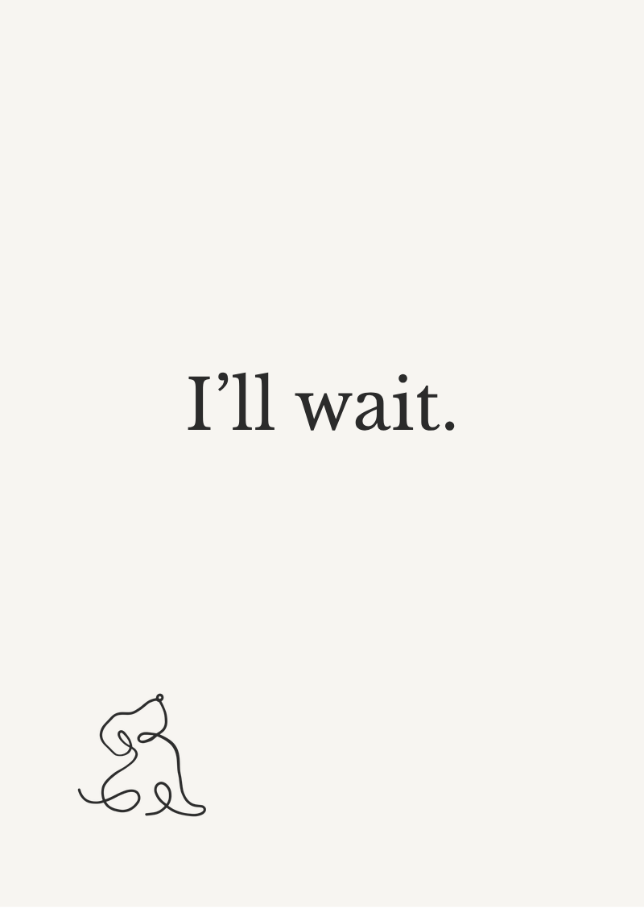
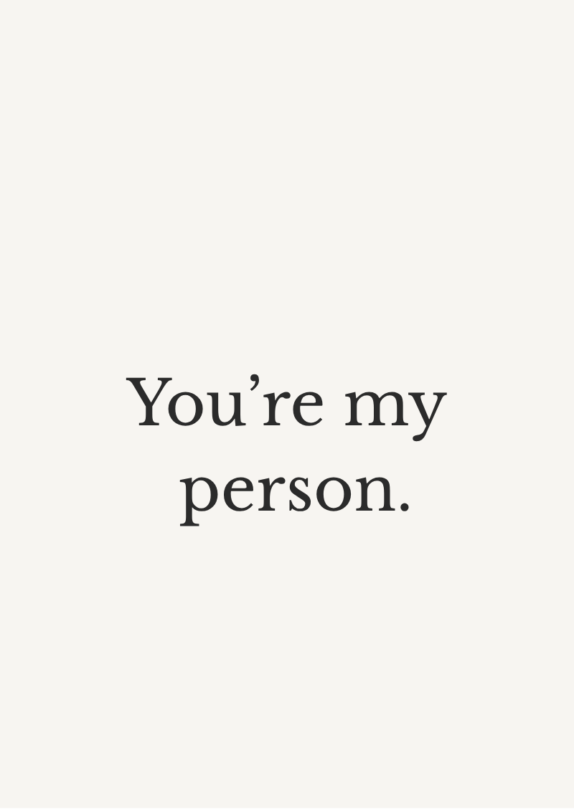
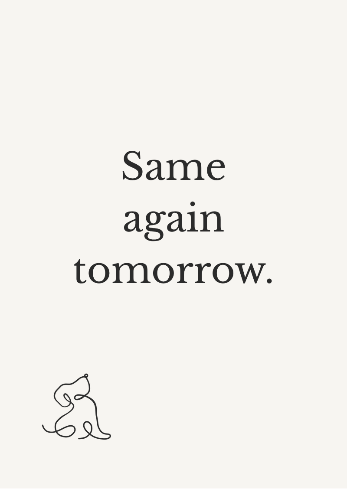
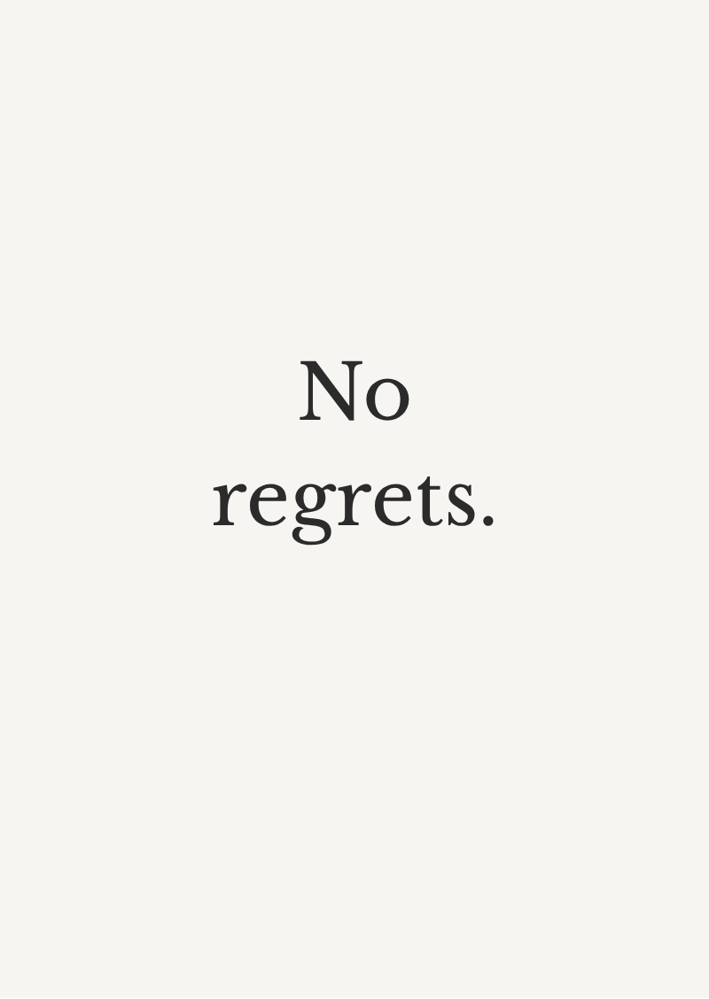
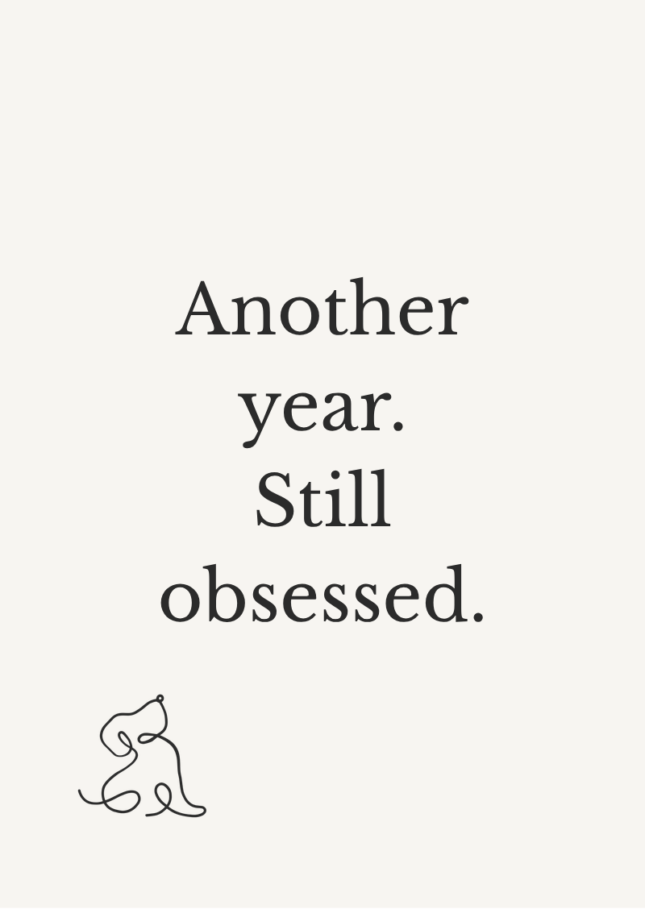
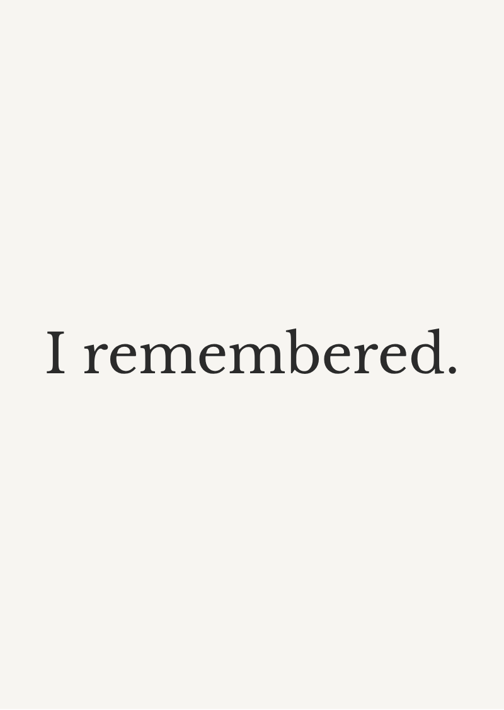
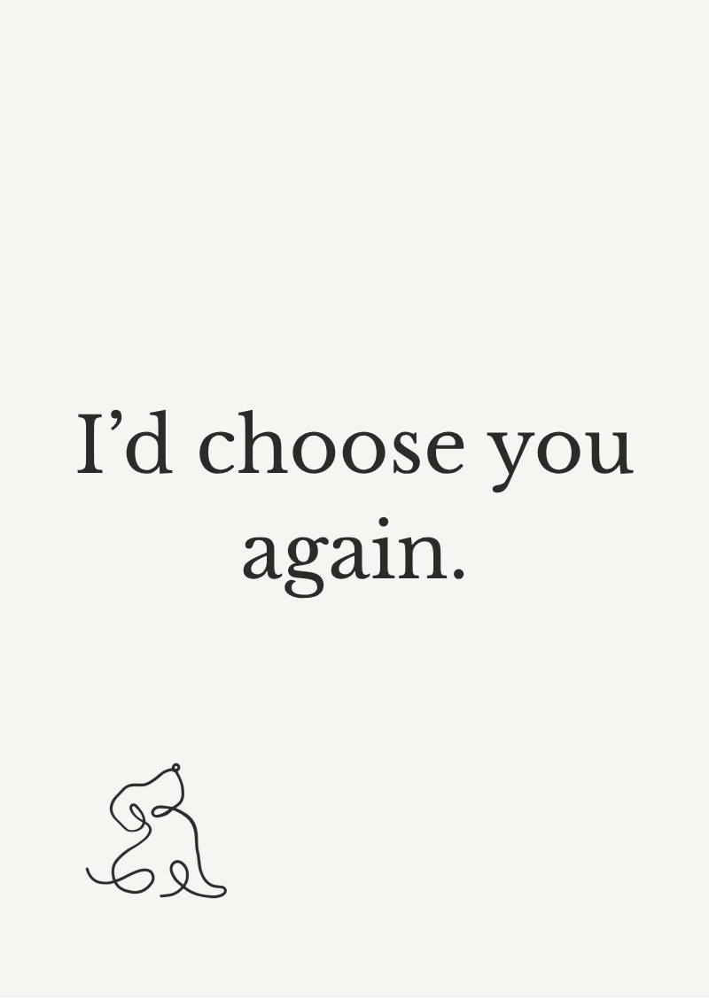
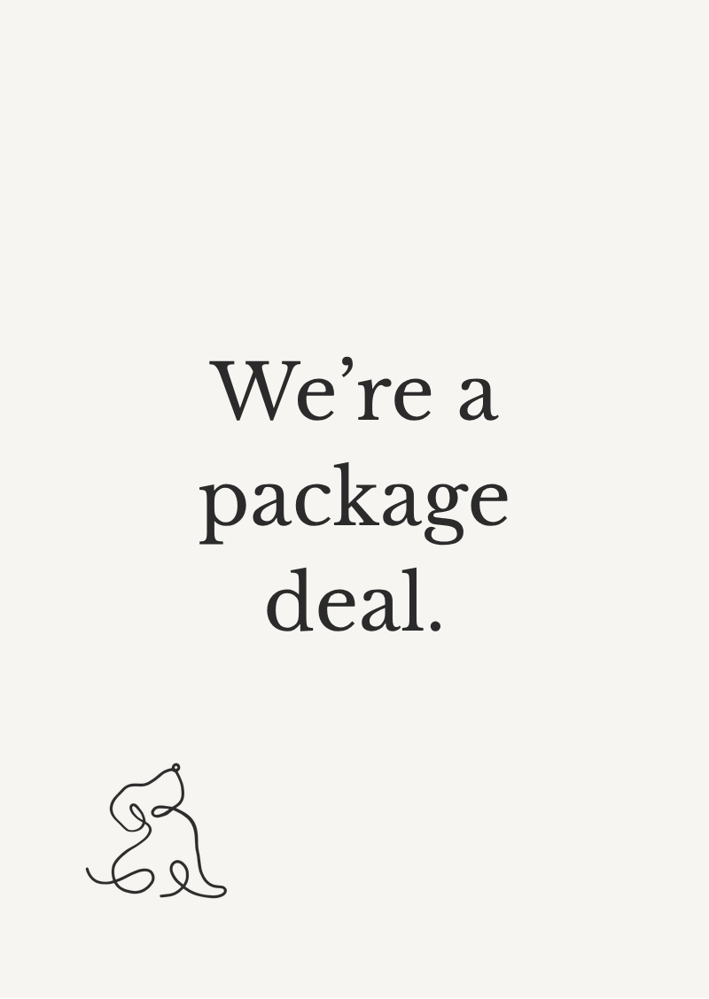

Cards for people who talk to dogs at parties.
Witty, planet-kind greeting cards from a tiny eco brand and one slightly feral dog.
Launching soon. Early birds get first dibs.


Deadpan on the front. Feral in spirit.
Nine designs from the first range. Artwork is still being finalised, so these may change before launch.






Three kinds of funny, all planet-kind.
For the friend who is barely house-trained but you love them anyway. Bold captions, unapologetic humour.
Warm, kind, and still a bit cheeky. Perfect for family, colleagues, and people who pretend to be sensible.
For the group chat you could never show HR. Smart, sharp, never cruel.
Who (or what) is Sniff & Soil?
Sniff & Soil started with one slightly feral dog, a lot of eco guilt, and a complete lack of cards that felt genuinely funny and pet-obsessed.
Sniff is the official chaos mascot. The cards are for absolutely everyone.
We're building a tiny-but-mighty brand for people who:
- Care what goes into their pets and out into the planet
- Prefer wicked humour over generic "best wishes"
- Love small businesses and thoughtful details
Cards first. Treats are on the roadmap.
Occasion cards, "absolutely feral" humour and wholesome options.
Curated gift boxes, eco-conscious treats, and little extras for pet people. One step at a time, one wag at a time.
If you buy your dog a birthday cake and sign cards with their paw print, you're exactly who we're making this for.
Planet-kind by design, not as an afterthought.
We're building Sniff & Soil around low-waste, recyclable and compostable choices wherever possible, from materials to packaging.
- Recyclable or compostable materials where possible
- No pointless plastic glitter nonsense
- Thoughtful, minimal packaging
- Designed with longevity, not landfill, in mind
Join the pack.
Be first to know when the card range drops, and get early bird offers.
- First access to new drops
- Occasional test products and samples
- A say in what we launch next